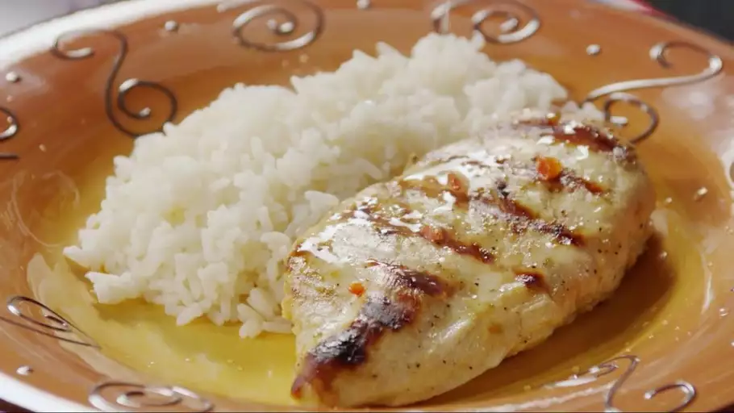

>
Lemon Chicken
Grilled Lemon Chicken

Description
Grilled lemon chicken makes a great summer meal paired with rice
and a salad. The chicken only needs to marinate for 20 minutes.
Ingredients
- 1/3 cup lemon juice
- 1/4 cup olive oil
- 1 tablespoon Dijon mustard
- 2 large cloves garlic finely chopped
- 2 tablespoons finely chopped red bell pepper
- 1/2 teaspoon salt
- 1/4 teaspoon ground black pepper
- 4 skinless, boneless chicken breast halves
Steps
-
Combine lemon juice, olive oil, Dijon mustard,
garlic, red bell pepper, salt, and pepper together in a bowl.
Set aside 1/4 cup of the marinade to use for basting.
Place chicken breasts in the bowl and stir to coat.
Marinate at least 20 minutes in the refrigerator.
- Preheat an outdoor grill for high heat and lightly oil the grate.
-
Remove chicken from marinade and shake off excess;
discard the remaining marinade in the bowl.
Cook chicken on the preheated grill until no longer pink
in the center, about 6 to 8 minutes per side,
basting occasionally with the reserved marinade.
An instant-read thermometer inserted into the center should
read at least 165 degrees F (74 degrees C).